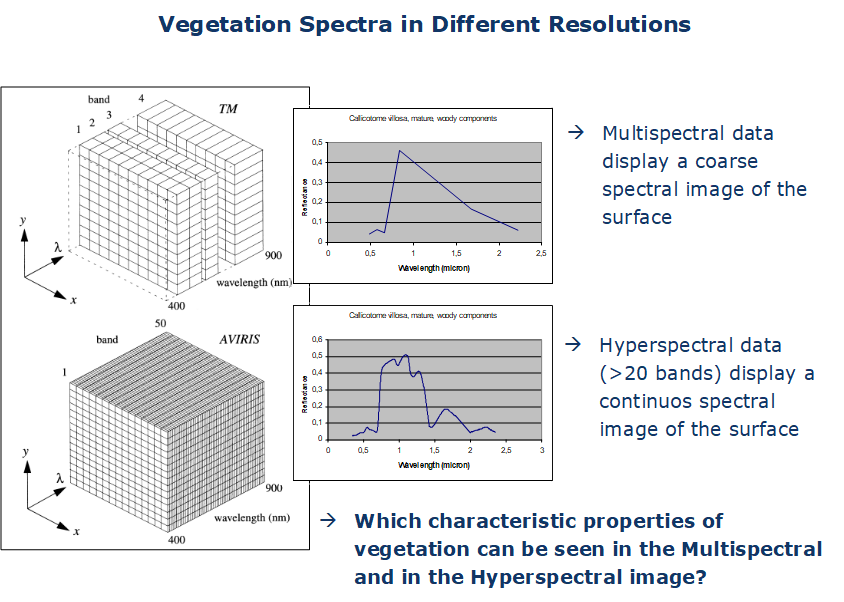
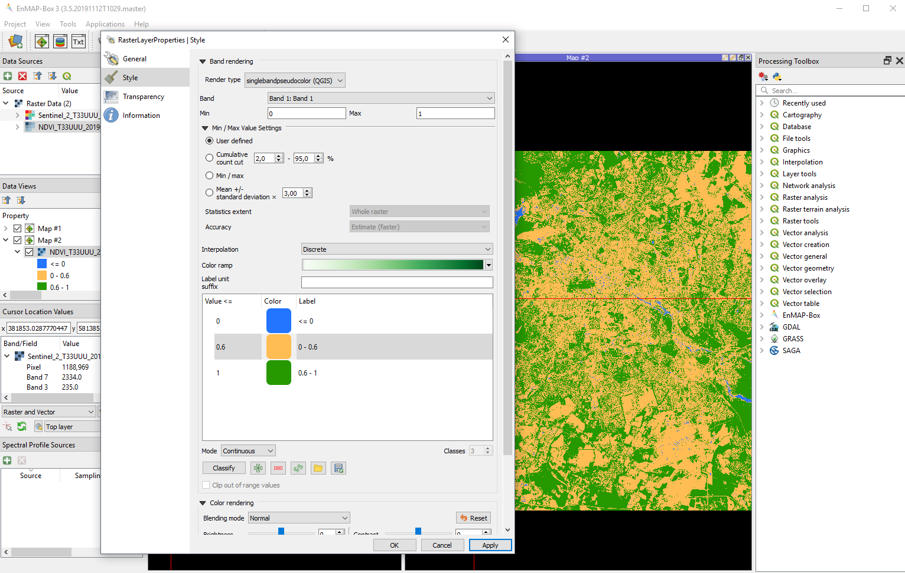

Welcome!
EOL Logo
About
Introduction to Remote Sensing is an introductory remote sensing course for Geography students at Humboldt-Universität zu Berlin. In this course, you will be exposed to theoretical fundaments and introductory applications of remote sensing. The course is based on open source software.
Requirements
Learning goals & course contents
Course materials
Software
We use openly available and platform independent (Windows, Linux, Mac OS) software packages throughout this course. Please install the latest versions of:
Data
Assignments
The weekly assignments are defined in the respective session. Each session comprises several tasks that involve scipting in R. Course participants must submit completed assignments, documented as R scripts, in moodle to pass. Weekly submission deadlines are monday, 23:59. Please name the script of your work group as SXX_name1_name2.R. Please structure your script for every assignment as follows:
Visual image interpretation
Berlin from above in Google EarthTM, 2009
Berlin from above in Google EarthTM, 2019
Image interpretation
Open Google EarthTM
Deactivate the oblique view (use key “R”)
Disable multimedia (e.g. pictures)
Move to two different positions in Berlin and answer the following questions with help of the aerial photographs:
Which season was the flight operated in?
Is it possible to get the exact month and/or day?
What was the day of the week?
What was the time of day?
Digitizing
Navigate to Campus Adlershof
Right-click on ‘Meine Orte’ and create a new folder called ‘FE1’
Use the digitizing tools (see image below) to…
Mark the wind tunnel as a point
Digitize a section of the S-Bahn trail as a line
Save the Institute of Geography as a polygon (semitransparent and outlined)
The results of the digitization need to be located in the ‘FE1’ folder
Save the folder ‘FE1’ with a right-click on the folder as a .kmz file on O:/…
Digitizing tools
Observing change
Use the date tool (see image below) to observe older/historical photos of Adlershof and answer the following questions:
What is the frequency of photo observations before and after 2010?
What major changes can be detected in Adlershof in 2000, 2010 and 2019?
Do your polygons/lines/points fit older pictures as well?
Describe the differences of image data in 1953, 2000 and 2019. Why do they differ?
Date tool
Summary
The analysis of earth observation data (satellite and aerial images) allows us to draw a variety of conclusions about processes and conditions of the Earth’s surface. For such analysis, different image properties are used (object features and context).
With help of image data from different dates, changes of the Earth’s surface can be analyzed.
The quality of image data enhanced over time. Today, satellite images with a spatial resolution of less than 1 m are available for most parts of the earth, in urban agglomerations aerial photographs often even exceed 10 cm spatial resolution.
Exercise
Characterize the land cover and land use change in Berlin with Google EarthTM.
On O:/WS2021_FE1/S01 you find a .kmz file with two given areas (Berlin-Mitte and Berlin-Adlershof)
Choose three suitable objects within each area and outline them with the digitizing tools
Choose three time steps (depending on the available data) that show a change process for your chosen objects
Answer the following questions for your objects (with images and text):
What changes contentwise?
What changes concretely in the photos?
Assignment: Upload your results as a PDF file on Moodle (each participant separately).
On-screen visualization
Recap
We can describe the human eye as a ‘sensor with three bands’
Sensitive for electromagnetic radiation (EMR) in the blue, green and red regions: spectral range between ~400-700 nm
The receptors for the three colors are stimulated across wavelength regions of ~150-200 nm (spectral resolution)
The intervals between the wavelengths of maximum sensitivity are ~50 nm to 150 nm wide (spectral sampling interval)

Retinal response of the human eye (Source: planetary.org LINK ÜBERPRÜFEN! )
- Digital cameras correspond to imaging sensors with three bands
Red-green-blue representation
Spectrometers are sensitive to wavelengths beyond the human eye’s sensitivity
Optical remote sensing makes use of the visible light (~380 - 700 nm), and the near and short-wave infrared (0.7 - ~3 µm)
Thermal remote sensing detects thermal infrared radiation (5 - 15 µm)
Radar remote sensing detects microwave radiation (1 mm - 1 m)
Common abbrevations:
VIS = visible: 380 - 700 nm
nIR = near infrared: 0.7 - 1.3 µm
swIR = short wave infrared: 1.3 - 3 µm
tIR = thermal infrared: 5 - 15 µm

Wavelength regions (Source: arm.gov LINK ÜBERPRÜFEN!)
- Optical remote sensing sensors make it possible to take images in the visible light (VIS), near-infrared (nIR) and shortwave-infrared (swIR)

Image showing the reflection of the visible light

Image showing the reflection of the near-infrared and visible light
Additive color model
Primary colours: red, green and blue (RGB)
Values range from 0 to 255 (the higher the more intense)
Max. 256 * 256 * 256 = 16,7 mio colours
Complementary/secondary colours: cyan, magenta and yellow (CMY)

RGB color model (Source left: orange-sinne.de, source right: informatikzentrale.de)
Exercise for colour mixing in QGIS
Open the shapefile ‘charlottenburg_point.shp’ in a new QGIS-project
Open the ‘Select Color Tool’ of the shapefile (Properties > Symbology > double click on colour bar)
For displaying different colours QGIS offers the RGB and HSV colour model

Select Color Tool in QGIS
Enter the colour values of the following table in the QGIS colour model and note/describe the resulting colour
red green blue colour 255 0 0 255 0 255 0 255 255 255 255 0 0 0 0 25 25 25 150 150 150 255 255 255
Screen representation of remote sensing images
- Remote sensing images can be presented as a greyscale image (single band) or RGB-composite (combination of three different bands)

Satellite images as single band grey, RGB-composite (true colour), RGB-composite (false colour)
Image histogram
- Image histograms show the frequency distribution of pixel values i.e. of a single band

Band 3 (red) as a greyscale image and its image histogram
Contrast stretch
Every RGB-channel has a colour depth of 8-bit on a monitor (equivalent to 256 greyscales)
Transfer of pixel values of an image (or band) to a monitor initially 1:1
At best, full grey value range is utilized optimally

Image histogram and satellite image with an optimally utilized grey value range
Due to recording and sensor conditions, data sets (or bands) often display only a section of the 256 obtainable grey values
With a 1:1 transfer, images are often low-contrast

Image histogram and satellite image with low-contrast
“Stretching” the image histogram, the screen display can be enhanced
Caution! The screen display changes, the data stays the same!

Stretching of an image histogram
Contrast enhancement describes a function of representation that is used to transfer pixel values in grey values
Often, linear contrast enhancement is used where the increase in gray value per increase in pixel value remains the same for the relevant value ranges

Min-max linear contrast stretch and standard deviation linear contrast stretch (Source: Jensen, 2011)
Exercise
Open the Sentinel-2 image ‘20150704_LEVEL2_SEN2A_BOA_berlin.bsq’ in QGIS
The image has a spatial resolution of 10 m, an extent of 2700 x 2700 pixel and 4 spectral bands (B1 = blue, B2 = green, B3 = red, B4 = nIR)
Open the display options of the image (Symbology)
What are the default settings after loading the image:
render type
RGB assignment
min/max value settings

Layer properties > Symbology in QGIS
- Display the Sentinel-2 image in true colours

Sentinel-2 image in true colours
Now, display only band 1 (blue) in greyscale (Render type > Singleband grey)
How did the min/max value settings change?
How rich in contrast does the image appear?
How does the image representation change when you alter the min/max value settings (i.e. cumulative count cut, etc.)?
Switch to the histogram section and calculate the image histogram
Adjust the settings as shown in the picture below
Select the nIR band
Vary the settings for min/max values to alter the contrast manually
Try to differentiate water bodies from land mass by stretching the min/max values

Settings for image histogram
Create a true and false colour (R = nIR, G = red, B = green) representation of the Sentinel 2 image and describe the main differences (key words)
Find one example (Screenshot) for each of the following surfaces with the true and false colour representation:
Deciduous forest
Coniferous forest
Artificial turf pitch
True turf pitch
Subsequently, describe the differences between deciduous and coniferous forest and artificial and true turf
For what phenomenons and/or surfaces is the nIR channel particularly sensitive?
- Assignment: Summarize task 1 - 4 visually and textually and upload your results as a PDF file on Moodle.
Land cover / land use classification
Mapping the Earth’s surface
The Earth’s surface is a mosaic of various landscapes (natural, semi-natural and anthropogenic)
Mapping with remote sensing requires generalized/transferable classification schemes to describe the Earth’s surface
Various landscapes including natural, semi-natural and anthropogenic surface types
Land cover or land use?
- What does a satellite see from orbit?

View from satellite platform

Spatial resolution affects what the satellite records
Land cover:
Biophysical cover of the Earth’s surface
For instance crops, forest, build-up area
Land use:
Anthropogenic use of the Earth’s surface
For instance agriculture, forestry, residential area

Land cover: crops, land use: agriculture (left); land cover: forest, land use: forest management (middle); land cover: build-up area, land use: residential area (right)
Visual image interpretation
| factor | explanation | example |
|---|---|---|
| contrast, colour, brightness | depend on reflective properties of the recorded surfaces | depth of water, roof material |
| shape and size | geometry, outlines and edges that divide the landscape in different objects | airport, river course |
| texture | structure of a surface due to material or surface properties, strongly depends on scale | maize cultivation, fields, forest |
| spatial context | determines functional interrelationship i.e. building function | railway station, lido, farm |
| shadows | contain information on object form, height and function | wind turbine, landscape topography |

Land cover: crops and bare soil, land use: agriculture (upper left); land cover: pines, land use: forestry (upper right); land cover: build-up area, land use: city district (bottom left); land cover: build-up area, river and grassland, land use: village (bottom right)
Land use / cover area frame survey (LUCAS)
Sample survey for land use and land cover in the EU
Collection of data on land use and land cover (LULC) as well as temporal changes
In situ gathering of point data by a standardized classification scheme to ensure comparability between EU member states
Used in the context of
Agriculture policy i.e. common agriculture policy
Conservation i.e. EU biodiversity strategy
Environmental monitoring i.e. COPERNICUS
LUCAS points are based on a 2-km-raster (ca. 1,1 mio points) from which around 270,000 were extracted for the survey
Survey takes place every three years (last 2018) involving ca. 750 cartographers

Points used for the LUCAS survey in Berlin and Northern Brandenburg (Source: eurostat)

Land cover of the EU-27 (Source: EU-LUCAS 2012)
- LUCAS as reference for remote sensing analyses i.e. europe-wide classification of land cover (Pflugmacher et. al 2018)

Classification of land cover of the EU member states in 2018 (Source: HU-Berlin geovis)
LUCAS classification scheme

LUCAS classification scheme divided into land cover (green) and land use (red)
Exercise
Part 1: Development of a classification scheme based on LUCAS nomenclature
Open the false-colour satellite image of Wuhlheide (1990) on O:/ in QGIS

False-colour satellite image of Wuhlheide, Berlin, from 1990
Create a classification scheme for the following nine surface types:
- Buildings
- Streets
- Rails
- Sealed (non-build-up) areas
- Coniferous forest
- Deciduous forest
- Mixed forest
- Grassland
- Water
Add a sample image and a short description (class properties) for every class
Further, add the LUCAS land use and land cover class. Use the most detailed level! (See LUCAS2015_C1_Annex_Classification_sheme.pdf)

Example for surface type ‘building’
Part 2: Mapping of your example areas
Digitize your example areas in QGIS according to your classification scheme from task 1. Note the following:
Three example areas for each class
Minimum mapping unit equals 0.05 ha (500 m2), objects smaller than that are included in the surrounding class
Create a map with your results and add a legend
Note and discuss problems and inaccuracies (key words)
Assignment: Upload the classififation scheme, map with legend and your discussion as a PDF file on Moodle.
Lab and field spectroscopy
The spectral dimension of remote sensing data
- How do we produce such measurements that allow differentiating different surfaces or monitoring changes of surfaces over time?
True colour image (left) and false colour image (right) of the stadium on the Wisconsin-Madison University campus, USA (Source: Lillesand, Kiefer and Chipman 2008)

Reflectance of natural and artificial turf (Source: Lillesand, Kiefer and Chipman 2008)
Basics - What is electromagnetic radiance? What do we measure?
The nature of electromagnetic energy
Energy (or light) travels as a periodic electromagnetic field (sinusoidal wave)
Light travels with – surprise! – speed of light (c)
Relevant characteristics are wavelength λ [nm] and frequency ν [Hz]
The wavelength is hence defined according to: \(λ = c / ν\)
In remote sensing, wavelength is the common unit
1 nm (nanometer) = 1 x 10-9 m
1 µm (micrometer) = 1 x 10-6 m
1 mm (millimeter) = 1 x 10-3 m
In remote sensing, a target’s spectral properties are measured across a wavelength region and in several or even many distinct bands

Electromagnetic wavelength (Source: Drury 1993)
Electromagnetic spectrum
Spectrometers are sensitive to wavelengths beyond the human eye’s sensitivity
Optical remote sensing makes use of the visible light (~400 - 700 nm), and the near and short-wave infrared (0,7 - ~3 µm)
Thermal remote sensing detects thermal infrared radiation (5 - 15 µm)
Radar remote sensing detects microwave radiation (1 mm - 1 m)
Common abbrevations:
VIS = visible: 370 - 700 nm
nIR = near infrared: 0.7 - 1.3 µm
swIR = short wave infrared: 1.3 - 3 µm
tIR = thermal infrared: 5 - 15 µm
Wavelength regions (Source: arm.gov LINK ÜBERPRÜFEN!)
Measuring surface properties
Geo- and environmental sciences are primarily interested in processes at the Earth’s surface
From the interaction between radiation and surface we can draw conclusions on the surface’s characteristics
Each surface’s interaction with radiation depends on it’s physical and chemical properties and varies with wavelength
That’s the basis for the entire remote sensing process
To start with: let’s control illumination and ignore the atmosphere
Let’s assume laboratory conditions (using an artificial light source instead of the sun)

Remote sensing without atmosphere (Source: Kraus und Schneider 1988)
A laboratory setup
Lab measurements are performed with a spectrometer and allow an exact characterization of a surface
We control illumination by using a lamp
We control the distance and angle to the surface to be measured (usually nadir measurement)
We control the instrument calibration, i.e. we measure and eliminate the noise from the signal

Typical laboratory setup with an ASD spectrometer (in blue), the fiber optics ending in a pistol grip mounted on a tripod and a video spot as artificial illumination source. The bright target on the smaller tripod is a calibration panel. (Source: Biospec)
Measuring target radiance
In Earth remote sensing, we perform measurements from above, i.e. we are interested in the reflected portion of the energy
At any surface, incoming radiation is either partially or fully:
reflected (ρ)
absorbed (α)
transmitted (τ)
The sum of all three terms is always 100% of the incoming radiance: \(ρ + α + τ = 1\) (Law of conservation of energy)

Emittance, absorbance, reflectance and transmittance of energy (light) (Source: edaphic.com)
The remote sensing sensor measures the reflected portion of the energy in the physical quantity called radiance
The unit of radiance is watts per square meter per steradian: W • m-2 • sr-1
The energy (i.e. electro magnetic radiation [W]) that is reflected (or emitted/transmitted) by a unit of a surface [per m²] into a portion of the hemisphere [per sr]?
Excursus - solid angle
A three-dimensional angle is called solid angle Ω
Definition Ω: the area A cut out from a sphere with the radius r
Unit: steradian [sr]
Ω = 1 sr if a conus cuts an area A of 1 m2 from a sphere with the radius r = 1 m
Solid angle Ω (Source: Wikipedia)
From radiance to reflectance
The problem with radiance as the unit of measure: it varies with illumination
Needed: a stable measurement over time, independent of illumination, to avoid introducing changes when measuring unchanged surfaces
Solution: normalize the measurement relative to the irradiation
The ratio between radiance reflected at the Earth’s surface and the incoming radiation is called reflectance
Reflectance = Radreflected / Radincoming
Reflectance is the percentage of the total measurable radiation, which has not been absorbed or transmitted
Emittance, absorbance, reflectance and transmittance of energy (light) (Source: edaphic.com)
Diffuse and direct reflectance
The observation direction influences the measured signal
In most cases, surfaces reflect the incoming radiation diffusely
A special case is Lambert reflectance that is often assumed in remote sensing for the sake of simplicity
Lambert reflectance: the measured signal is independent of the observation direction (no directionality effects in the reflected signal)
In reality, most surfaces reflect in a mixed way, which can be described by the so called Bidirectional Reflectance Distribution Function (BRDF)
Spectral reference panels (e.g. Spectralon®) are almost Lambert reflectors

Direct reflectance (a), Lambertian reflectance (b) and mixed reflectance (c) (Source: Albertz 2001)
Spectral surface characteristics

Example of a vegetation measurement (green) in the field

Field measurements
White reference
- In addition to the target surface, a white surface is measured
*This so-called White Reference is a surface with a reflectance of almost 100% across the entire wavelength spectrum
Spectralon®, alternatively BaSO4
Reference panels allow measuring the maximum backscatter for a particular point in time and position on Earth
*If a panel reflects 100% across the spectral region of interest, its radiance is the same as the incoming radiance, i.e. it can serve for normalizing the reflectance
Example of a white reference measurement (red) and vegetetation measurement (green) in the field

White reference measurement in the field
Reflectance
The ratio between the target radiance measured and the reference panel (white reference) is hence reflectance
reflectance = Radtarget / RadWR
Reflectance is the percentage of the total measurable radiation, which has not been absorbed (or transmitted)
Note: The division by RadWR can result in considerable noise in wavelength regions with poor signal-to-noise-ratio

White reference spectra in red and vegetation spectra in green (left) and the resulting reflectance in green (right)
Reflectance of different surfaces and materials

Field measurements
The object-specific influence determines object-specific patterns in the spectrum of recorded electromagnetic radiation
The change of irradiation at the Earth’s surface results from material-specific absorption
We distinguish between absorption features due to electron transitions, molecular vibrations and molecular rotation
Electron transitions require a high amount of energy > they occur mostly in the VIS
Vibration and rotation can lead to narrow absorption bands also in the nIR and SWIR
Reflectance of photosynthetic active vegetation
Vegetation produces a distinct spectral reflectance pattern due to its leaf and cell structure, its physiognomy, and complex stand structure
The reflectance of photosynthetically active vegetation is characterized by different factors in the VIS, nIR and SWIR:
VIS - leaf pigments
nIR - cell structure
SWIR - water content
Photosynthetically inactive plant parts differ considerably from active ones across different wavelength regions

Spectra of photosynthetic active vegetation; VIS (leaf pigments) in green, nIR (cell structure) in red and SWIR (water content) in blue
Single leaf reflectance
The reflectance of a single leaf or needle is determined by various absorption, transmission and reflectance characteristics
Important characteristics are:
The local reflectance maximum in the VIS (green peak) is small
The high reflectance in the nIR results in the so-called “red edge”
Thus, transmission in the nIR is very high, in the VIS very small
Lignin and cellulose, and particularly water, lead to high absorption, especially in the SWIR

Plant traits that influence vegetation spectra
Plant stress
According to the factors determining reflectance, there are also three determining damaging factors:
Pigments
Cell structure
Cell water
Destruction of chlorophyll causes a flattening of the Cab-specific absorption bands
Destruction of the cell structure causes a shift of the red edge towards the nIR and a flattening of the nIR-plateau
Both effects can be detected with remote sensing systems

Spectra of vegetation with (green) and without (orange) plant stress (Source: Gausman 1974)
Water stress
Dehydration of the cell leads to a flattening of absorption bands that depend on water content
Additionally, albedo increases considerably
Absorption bands of cellulose and lignin appear more clearly
Heavy water stress ultimately leads to a destruction of the cell structure and a decrease in plant metabolism

Spectra of vegetation with low (red), medium (green), high (blue) and very high (black) water stress
Multi-layered leaf reflectance
The plant’s leaf organs produce complex reflectance patterns
In the VIS, one leaf layer is enough to absorb almost the entire radiation
In the nIR, complex radiation paths relate to multiple transmission

reflectance behaviour of wavelengths in the VIS (blue) and nIR (red) on plant leaf layers
As the degree of transmission varies greatly in different wavelength regions, non-linear changes of the reflectance behaviour occur with an increasing number of leaf layers
A saturation of the reflectance in the nIR is – depending on the character of the respective leaves or needles – reached with 6 to 7 leaf layers
A commonly used measure for the number of leaf layers is the so called ‘leaf area index’ (LAI), measured in [m2 • m-2]
Plants as a system
Plants do include photosynthetically inactive parts
Fruits, spines, flowers, bark, and dead parts of the plant affect the reflectance
Also structural factors affect the signal
Aircraft or satellite based methods detect an integral signal
In remote sensing, the analysis often focuses on the green parts of the plants only

Reflectance spectra of a stack of leaves (green), the whole plant (blue) and bark (red)
Reflectance of soils
Soil moisture
Example: silty loam
Alteration of
Form of the reflectance curve
Albedo
Absorption depth
FWHM (here: maximum absorption depth, similar to sensitivity function of sensors > compare chapter on spectral resolution)

Reflectance spectra of soil with low and high water content (Source: Asrar 1989, adapted)
Organic material content
Figure shows difference between low and very high organic content
With increasing portion of Corg
The total reflectance decreases
Particularly the reflectance at 0.6 µm decreases
The depth of the water-dependent absorption bands decreases

Reflectance spectra of soil with low and high organic material content
Reflectance of water
Water, in its fluid phase, is an excellent absorber (especially in the infrared)
Clear water reflects less than 5 % in the VIS
In the nIR and SWIR, reflectance is close to 0
Accordingly, water is almost a black body in these wavelength regions
In its frozen form of ice, and particularly as snow, water is a good reflector

Reflectance spectra of pure water from simulation (dark blue) and river water from the Mosel (turquoise)
Optical data (Multi- / Hyperspectral)
Raster formats in remote sensing
What you always need to know about your dataset for proper data handling:
Spectral resolution (wavelengths, bands)

Spatial resolution (pixel size, GSD), spatial resolution may differ for different bands in the same data set

Rows + columns (height + width)

Radiometric resolution per band (data type)

Band Interleaved by Pixel (BIP): for each band, gray values are stored in a pixel-wise manner on disk
BIP storage structure for three bands with n pixel
- Band Interleaved by Line (BIL): bands are stored line-wise
BIL storage structure for three bands with n pixel
- Band Sequential (BSQ): entire bands are stored on disk one after the other
BSQ storage structure for three bands with n pixel
Metadata or auxiliary data are either stored as part of an integrated data format (in the same file) or as an extra dataset accompanying the image data
Data types
raster values are numbers that are stored in memory
image size = bands * lines * columns * bit width
| Data type | Typical Bit Width | Range |
|---|---|---|
| byte | 1 byte = 8 bit | -127 to 127 (signed); 0 to 255 (unsigned) |
| integer | 2 byte = 16 bit | -32768 to 32768 (signed); 0 to 65535 (unsigned) |
| float | 4 byte = 32 bit | -Inf to +inf, ‘single precision’; floating point number according to IEEE 754 |
| double | 8 byte = 64 bit | -Inf to +Inf, ‘double precision’ |
File types
over 200 raster image formats (see gdal.org)
Most common: ENVI, JPEG2000, GeoTiff
| Name | Extension | Description |
|---|---|---|
| GeoTiff | .tif, .tiff, .gtiff | TIFF + geospatial reference |
| JPEG2000 | .jp2, .j2k | used by many data providers; usually for integer values only |
| ENVI | generic, often used in imaging spectroscopy community; Header file (.hdr) with meta data! | |
| VRT | .vrt | GDAL Virtual Raster, XML text file |
| HDF4, HDF5 | .hdf, .h4, .hdf4, .h5, .hdf5 | hierarchical data format, version 4 or 5; multi-resolution raster |
| netCDF | Network Common Data Forat; multi-resolution raster | |
| SAVE | Standard Archive Format for Europe e.g. Sentinel-1 and Sentinel-2 |
Metadata
- Metadata are additional information about the data and are commonly recorded during data acquisition, e.g. Exchangeable Image File Format (EXIF) in standard camera images

Metadata of a photograph
Remote-sensing raster formats usually have their individual way to store metadata
ENVI format: binary file (.bsq) + header File (.hdr)

Metadata in ENVI format as .hdr file
GeoTIFF: within .tiff image
GDAL: (.aux.pam) XML file to supplement existing metadata

Metadata in GDAL format as XML file
HyMap data
HyMap-sensor: imaging spectrometer
Airborne hyperspectral sensor
Line scanner
Spectral range: 450 - 2500 nm
128 spectral channels
4 sensor modules á 32 bands
Geometric resolution: 3 - 10 m (depending on altitude)

HyMap sensor (Source: NASA)

HyMap data of Berlin

HyMap sample spectra of “pure surface materials”
Exercise
Dataset
Extract of Berlin-Brandenburg from Berlin-Urban-Gradient dataset
Urban-land-gradient
Recorded 20th August 2009
111 of 128 spectral channels

Dataset for the exercise
Discussion of data type and structure on the basis of the HyMap image
Open the header file (metadata) of the HyMap image on O:/ (…/S05/envi_format/HyMap_BB_subset.hdr) in Notepad++
What do you find out about the following data properties of the image?
Dimension in x and y
Spatial resolution
Spectral resolution
Radiometric resolution
Data type
Interleave
What additional data properties may be derived from the metadata?
Upload on Moodle?
EnMAP Box for QGIS
Introduction
Freely available and platform-independent QGIS plugin
Developed by HU Berlin´s Earth Observation Lab for the hyperspectral satellite sensor EnMAP

Interface of the EnMAP plugin in QGIS

Exercise
Part 1: Get to know the EnMAP-Box and key features
- Menu structure, opening and portraying images, zoom in and out, selection of bands, contrast stretching


- Visualizing and collecting image spectra, editing of attribute information, colouring of spectra, saving spectral library


Part 2: Creating a specral library
Collect 5 reflectance spectra in the HyMap image (HyMAP_BB_Subset.bsq) for following (pure) materials/surfaces:
Building
Sealed (non build-up)
Grass
Tree
Soil
Water
Create two attribute columns (‘class’, ‘description’) and fill them in. The first serves as an index for the assignment of the six classes (i.e. ‘building’), the latter should include a detailed description of the material/surface (i.e. ‘red tiles’)
Colour the spectra appropriately with regard to the classes
Save the collected spectra via the Spectral Library Viewer as a Spectral Library file (SLI)
Export the image of the coloured spectra as a PNG file and create a PDF file (including a legend)
Assignment: Put the Spectral Library (all files) and the PDF together in a ZIP file and upload the ZIP file on Moodle.
Data acquisition
Provider (vielleicht eher ‘Sentinel 2’?)
COPERNICUS program features a pair of optical Earth observing satellites: Sentinel-2A and -2B Launched in June 2015 (Sentinel-2A), and March 2017 (Sentinel-2B)
Revisit time 5 days with both satellites, 290km swath width
Sensor: Multispectral Imager (MSI), 13 spectral bands, partly resembling Landsat
Spatial resolution of 10 – 60 m, depending on spectral bands, e.g. nIR bands 8 (10m) and 8a (20m).
Sentinel 2 vs Landsat 7 and 8
Sentinel 2
Sentinel-2 products are delivered in various processing levels.
Level 1B: Top-of-atmosphere radiance values in sensor geometry
Level 1C: Top-of-atmosphere reflectance in cartographic geometry
Level 2A: Bottom-of-atmosphere reflectance in cartographic geometry
L1C and L2A products are partitioned in “granules”: 100x100 km2 UTM/WGS84 projection
Sentinel 2 Granules
Acquiring Sentinel-2 data
Create a User-Account at the Copernicus Open Access Hub
Search for images with these specifications:
Date: XXX Sensor: Sentinel-2 Producttype: Surface Reflectance (Level 2A, S2MSI2A) Cloud cover: max. 20% Region: greater area of BerlinHow many images are available for these specifications? download this image:
Granule: XXX
Date: XXX
Pre-processing
The downloaded Sentinel-2 image is a .zip-file
Unzip it and delete the .zip-file
Take a look at your files
Sentinel 2 filestructure
Visualizing the Sentinel-2 image with ‘Virtual Raster Builder’ in the EnMAP-Box
Goal: the single bands in JPEG2000-format (.jp2) will be merged into a single Multiband-Image in ENVI-format
Open QGIS and install the ‘Virtual Raster Builder’ plugin
Open the EnMAP-Box and load ‘S2_Subset_Berlin.shp’ into Data Sources. The shapefile will be used to clip the Sentinel-2 scene to a smaller extend
Open ‘Virtual Raster Builder’ from the EnMAP-Box. Create a Multiband-Image with the following specifications:
- Spectral Bands: B2, B3, B4, B5, B6, B7, B8a, B11, B12
- Spatial Resolution: 20m (from the ‘R20M’ file)
- Spatial Extend: according to the shapefile
- Format: ENVI
Create VRT (in den Folien vom Vorjahr soll man ein ENVI erstellen…)
Amend metadata
Visualize the Multiband Sentinel-2 Image in the EnMAP-Box with the band combination R = 8a (nIR), G = 4 (red), B = 3 (green).
Take a look at the .hdr file. Which metainformation is missing ?
Delete the edited Sentinel-2 image from the Data Source Panel. Also delete the .aux-file and .vrt-file from apple finder / windows explorer
Add the wavelengths of the single bands and the unit for the wavelengths in the .hdr file (metadata). Research the unit and the extend of the applied Sentinel-2 wavelengths.
Reload the Sentinel-2 image into the Data Source Panel. The wavelengths should now be displayed on the x-axis when visualizing at image spectra. Now you can compare spectra from different Sensors.
Compare S2 & HyMap
part 1 - spatial resolution
Visualize the Sentinel-2 image and the HyMap image from last week in a RGB bandcombination that is suited for comparison. In order to do that open the images in two separate MapViews and link them (spatialy + zoom)
Compare both images visually and describe the effects on image details due to the different spatial resolution (20 m vs. 3.6 m).
Choose one surface as example for each of these classes: impervious- build up, impervious- not build up, grass/lawn, trees, soil, water.
Take a screenshot from each example.
Compare S2 & HyMap
part 2 - spectral resolution
Restart QGIS and EnMAP-Box. Display the Sentinel-2 image and the HyMap image in a suited RGB band combination (Wozu ist der Neustart notwendig ?)
Visualize spectra of the same surface in the Sentinel-2 and in the HyMAP image (9 vs. 111 spectral bands).
Try to choose a ‘pure’ surface (no mixtures) which is also stable in temporal terms (unchanged over time).
Do this for the classes mentioned above and add a description and a screenshot.
Assignment: please upload the comparison (spatial and spectral) of the Sentinel-2 and the HyMap image as pdf to moodle.
assignment example
Vegetation properties & spectral indices

Normalized Difference Vegetation Index (NDVI)
The derivation of vegetation indicies or similar variables is based on feature extraction
NDVI the one of the most common vegeation indicies
It represents the difference between red and nIR reflectance. This difference is strongly prounounced with photosynthetically active vegetation. (Sollte man wahrscheinlich nochmal umschreiben)
The NDVI displayes this difference within a normalized value (between -1 and 1) for each pixel.
\[NDVI = (ρnIR- ρred) / (ρnIR+ ρred)\]
e.g. for Sentinel-2 data use reflectance from bands nIR = 865 nm and red = 665 nm for calculating the NDVI.
The calculation of the NDVI results in a singleband grayscale image which can be saved as a new file.
Part 1: Calculating the Normalized Difference Vegetation Index (NDVI) for Sentinel-2 data
Open the EnMAP-Box and display the Sentinel-2 image (20 m, 9 spectral bands, subset Berlin, DATE: XXX) from last week in a RGB bandcombination of your choice.
via ‘Applications’ start the ‘imageMath Calculator’ and calculate the NDVI.
1. specify the the input image -> S2_20m = [select Sentinel-2 image] 2. define bands nIR [865 nm] and -> red = float32(S2_20m[2]) red [665 nm] as variable -> nIR = float32(S2_20m[6]) 3. provide the NDVI formular -> NDVI = (nIR - red)/(nIR + red) 4. specify the output image -> NDVI = [filepath and name of the NDVI image]Run the function and open the singleband grayscale image in a new Map View
Part 2: Discussion of the NDVI
Take a look at the NDVI-Pixelvalues and create a NDVI image-histogram (Tools ‘ImageStatistics’)
Which value range take pixels in the NDVI image ?
Note a representative NDVI value for these surfaces: water, asphalt, decidous forest, open soil.
Also, note the corresponding refectance values in the red and nIR band from the original image. How can the values be explained, concerning the spectral properties of the surfaces?
Under what cirumstances (relation red to nIR) can NDVI values of 0; 1; -1 be created (in theory)? Please note one pair of values (red and nIR) for each of these NDVI values.
part 3: Visualizing of NDVI classes
- classify the NDVI image through the style menu within the layer properties. Try to display three surfaces: water, impervious/soil and vegetation.

Assignment part 1: Correlation of NDVI and Imperviousness
Open the image ‘copernius_imperviousness_2015_berlin.bsq’ in a second Map Window and link it to the NDVI image.
Inform yourself about the origin of the layer: (https://land.copernicus.eu/pan-european/high-resolution-layers/imperviousness)
Gather NDVI values of 20 surfaces (zu viele, 10 würden reichen) in a table. Make sure to cover a wide range of values (e.g. -0.2 to 1).
Create a scatterplot that shows the correlation between NDVI and imperviousness. Use a software of your choice; prefarably R.
Describe and discuss the scatterplot in bullitpoints.
Assignment part 2: Temporal Variation of the NDVI
Calculate another NDVI image from the provided Sentinel-2 image taken in winter (date XXX). Use the ‘imageMath Calculator’.
-> Sentinel_2_T33UUU_20190216_20m_9bands_subset_berlin.bsq
Then calculate a difference-image for summer and winter NDVI.
-> NDVI 27. Juli 2019 – NDVI 16. Februar 2019 DATES: XXX
Create the histogram of the difference-image and briefly discuss the distribution
Display the difference-image in a suited Visualisation; e.g. discrete classes, colour gradient from high negative to high positive differences.
Discuss the resulting Map in bullitpoints concerning these surfaces: impervious (buildings, and non build-up), agriculture, forest, water.
Assignment: Please upload the results of the comparison of NDVI and imperviousness (part 1, plot and discussion) and the temporal variation of NDVI (part 2, histogram, map + legend, discussion) as pdf to moodle.
Berechnen Sie das Histogramm des NDVI-Differenzbildes und diskutieren Sie die Verteilung stichpunktartig.
Stellen Sie das NDVI-Differenzbild mit einer sinnvollen Visualisierung dar, z.B. einer diskrete Klassenunterteilung, oder einem Farbgradienten von hohen negativen bis zu hohen positiven Differenzen. Diskutieren Sie die Karte stichpunktartig bzgl. folgender Oberflächen: Versiegelte Flächen (Gebäude & unbebaut), Landwirtschaft, Wald, Wasser Bitte laden Sie die Ergebnisse des Vergleiches NDVI und Versieglung (Teil 1, Plot, Diskussion) und der temporalen Variation des NDVI (Teil 2; Histogramm, Karte + Legende, Diskussion) als PDF in Moodle hoch.